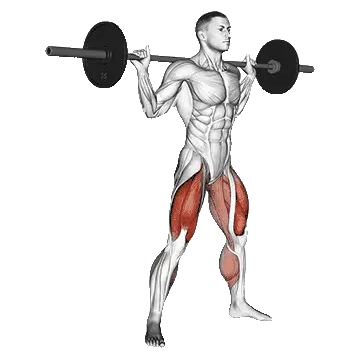

Sumo-Kniebeuge
Für Sumo-Kniebeuge kannst du Durchschnittsgewicht und Kraftstandards als Referenz für den Bereich Beine vergleichen. Die Zielmuskulatur ist Gluteus maximus, Quadrizeps, Adduktoren.

Durchschnittsgewicht: Mittelstufe
Richtwert für eine Person auf mittlerem Niveau.
Männer
221 lb
Frauen
112 lb
Sumo-Kniebeuge: Durchschnittsgewicht [1RM]
| Level | ||
|---|---|---|
| Einsteiger | 52 lb | 26 lb |
| Anfänger | 120 lb | 61 lb |
| Fortgeschrittene | 221 lb | 112 lb |
| Erfahrene | 353 lb | 179 lb |
| Elite | 508 lb | 257 lb |
Hinweis: Diese Standards sind 1RM-Schätzwerte auf Basis durchschnittlicher Kraftsportlerinnen und Kraftsportler. Körpergewicht, Alter und andere persönliche Faktoren können die Werte beeinflussen. Die detaillierten Daten stehen in der Tabelle unten.
Sumo-Kniebeuge: Kraftstandards(lb)
Männer nach Körpergewicht (lb) [1RM]
| Körpergewicht | Einsteiger | Anfänger | Fortgeschrittene | Erfahrene | Elite |
|---|---|---|---|---|---|
| 110 | 18 | 61 | 133 | 232 | 351 |
| 120 | 25 | 73 | 149 | 253 | 378 |
| 130 | 32 | 84 | 165 | 274 | 403 |
| 140 | 39 | 95 | 181 | 294 | 427 |
| 150 | 46 | 106 | 196 | 313 | 450 |
| 160 | 53 | 117 | 210 | 331 | 472 |
| 170 | 60 | 127 | 225 | 349 | 493 |
| 180 | 68 | 138 | 238 | 366 | 514 |
| 190 | 75 | 148 | 252 | 383 | 533 |
| 200 | 82 | 158 | 265 | 399 | 552 |
| 210 | 89 | 168 | 278 | 415 | 571 |
| 220 | 96 | 178 | 290 | 430 | 589 |
| 230 | 103 | 188 | 302 | 445 | 606 |
| 240 | 110 | 197 | 314 | 459 | 623 |
| 250 | 117 | 206 | 326 | 473 | 639 |
| 260 | 124 | 215 | 337 | 487 | 655 |
| 270 | 131 | 224 | 348 | 500 | 670 |
| 280 | 138 | 233 | 359 | 513 | 685 |
| 290 | 144 | 241 | 370 | 526 | 700 |
| 300 | 151 | 250 | 380 | 538 | 714 |
| 310 | 157 | 258 | 391 | 550 | 728 |
Männer nach Alter [1RM]
| Alter | Einsteiger | Anfänger | Fortgeschrittene | Erfahrene | Elite |
|---|---|---|---|---|---|
| 15 | 44 | 102 | 188 | 301 | 432 |
| 20 | 50 | 117 | 215 | 344 | 495 |
| 25 | 52 | 120 | 221 | 353 | 508 |
| 30 | 52 | 120 | 221 | 353 | 508 |
| 35 | 52 | 120 | 221 | 353 | 508 |
| 40 | 52 | 120 | 221 | 353 | 508 |
| 45 | 49 | 113 | 209 | 335 | 482 |
| 50 | 46 | 106 | 197 | 314 | 452 |
| 55 | 43 | 98 | 182 | 291 | 418 |
| 60 | 39 | 90 | 166 | 265 | 382 |
| 65 | 35 | 81 | 150 | 240 | 345 |
| 70 | 31 | 73 | 135 | 215 | 309 |
| 75 | 28 | 65 | 120 | 192 | 277 |
| 80 | 25 | 58 | 108 | 172 | 247 |
| 85 | 23 | 52 | 96 | 154 | 222 |
| 90 | 20 | 47 | 87 | 139 | 200 |
Frauen nach Körpergewicht (lb) [1RM]
| Körpergewicht | Einsteiger | Anfänger | Fortgeschrittene | Erfahrene | Elite |
|---|---|---|---|---|---|
| 90 | 16 | 44 | 88 | 148 | 218 |
| 100 | 19 | 48 | 94 | 155 | 228 |
| 110 | 21 | 52 | 99 | 162 | 236 |
| 120 | 23 | 56 | 105 | 169 | 244 |
| 130 | 26 | 59 | 109 | 175 | 251 |
| 140 | 28 | 63 | 114 | 180 | 258 |
| 150 | 30 | 66 | 118 | 186 | 265 |
| 160 | 32 | 69 | 122 | 191 | 271 |
| 170 | 34 | 72 | 126 | 196 | 277 |
| 180 | 36 | 75 | 130 | 201 | 282 |
| 190 | 38 | 78 | 134 | 205 | 288 |
| 200 | 40 | 80 | 137 | 210 | 293 |
| 210 | 42 | 83 | 141 | 214 | 298 |
| 220 | 44 | 85 | 144 | 218 | 302 |
| 230 | 45 | 88 | 147 | 221 | 307 |
| 240 | 47 | 90 | 150 | 225 | 311 |
| 250 | 49 | 92 | 153 | 229 | 315 |
| 260 | 50 | 95 | 156 | 232 | 319 |
Frauen nach Alter [1RM]
| Alter | Einsteiger | Anfänger | Fortgeschrittene | Erfahrene | Elite |
|---|---|---|---|---|---|
| 15 | 22 | 52 | 95 | 152 | 219 |
| 20 | 26 | 59 | 109 | 174 | 251 |
| 25 | 26 | 61 | 112 | 179 | 257 |
| 30 | 26 | 61 | 112 | 179 | 257 |
| 35 | 26 | 61 | 112 | 179 | 257 |
| 40 | 26 | 61 | 112 | 179 | 257 |
| 45 | 25 | 58 | 106 | 170 | 244 |
| 50 | 23 | 54 | 100 | 159 | 229 |
| 55 | 22 | 50 | 92 | 147 | 212 |
| 60 | 20 | 46 | 84 | 135 | 194 |
| 65 | 18 | 41 | 76 | 122 | 175 |
| 70 | 16 | 37 | 68 | 109 | 157 |
| 75 | 14 | 33 | 61 | 98 | 140 |
| 80 | 13 | 30 | 55 | 87 | 125 |
| 85 | 11 | 27 | 49 | 78 | 112 |
| 90 | 10 | 24 | 44 | 70 | 101 |
Hinweis: Eine Standard-Langhantel im Fitnessstudio wiegt meist 44 lb.
Tracking und Analyse in der Shiba App
Gewichte, Wiederholungen und Fortschritt an einem Ort.
Tabellenhinweise
| Level | Beschreibung | Verteilung |
|---|---|---|
| Einsteiger | Beherrscht die saubere Technik und trainiert seit mindestens 1 Monat regelmäßig. | Untere 5% |
| Anfänger | Trainiert seit mindestens 6 Monaten regelmäßig. | Top 80% |
| Fortgeschrittene | Trainiert seit mindestens 2 Jahren regelmäßig. | Top 50% |
| Erfahrene | Trainiert seit mehr als 5 Jahren regelmäßig. | Top 20% |
| Elite | Trainiert diese Übung seit mehr als 5 Jahren gezielt. | Top 5% |
Weitere Übungen
Beine
Kickbacks am Kabelzug
Beine / Kabelzug
Wadenheben mit Körpergewicht
Beine
Ausfallschritt
Beine
Glute Bridge
Beine
Pin Kniebeuge
Beine
Walking Lunge
Beine
Kurzhantel-Frontkniebeuge
Beine / Kurzhantel
Kurzhantel-Split Squat
Beine / Kurzhantel
Rückwärts-Ausfallschritt
Beine
Kniebeugensprung
Beine
Nordic Hamstring Curl
Beine
Sissy Squat
Beine